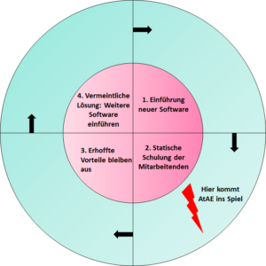
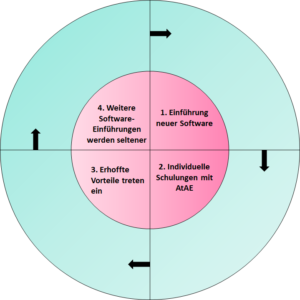

App-Experten fragen: Der Digitalisierungsfalle entkommen
Ask the App Experts (AtAE) ist der Ausbruch aus der Digitalisierungsfalle. Mit AtAE bekommen Ihre Mitarbeitenden Antworten auf ihre persönlichen Software-Fragen bezüglich ihrer individuellen Probleme.
„Software is eating the world“ hat Marc Andreessen schon 2011 festgestellt. Ein Ende ist nicht abzusehen. Eine Softwareeinführung jagt die nächste und ein Anbieter wie z.B. Microsoft überholt sich selbst mit Änderungen im Microsoft 365 Paket. Unternehmen, deren IT-Abteilungen und Mitarbeitenden kommen kaum hinterher die schnellen Änderungen zu implementieren, geschweige dazu, wirklich effiziente digitale Prozesse zu leben. Dabei erhoffen sich alle Genannten vom Einsatz neuer Software einen großen Effizienz- und Produktivitätsgewinn, Wettbewerbsvorteile und nicht zuletzt eine Entlastung der Mitarbeitenden. Selbstverständlich soll sich die Investition in neue Software schnell auszahlen.
Die Digitalisierungsfalle
Doch der erhoffte Nutzen bleibt oft aus! Unternehmen rutschen nicht selten in die Digitalisierungsfalle:

- Bei der Einführung von neuer Software wird nicht umfangreich genug analysiert, welche Prozesse, Informationen, mit welchen Unterschieden in den verschiedenen Unternehmensbereichen abgebildet werden können und sollen. Die Prozesse wurden vor der SW-Einführung nicht hinterfragt und/oder optimiert.
- Die Software passt nicht zu den Prozessen, bzw. sie wurde nicht an die Gegebenheiten angepasst. Mitarbeitende bekommen, wenn überhaupt, nur kurze einführende und unterstützende Tool-Schulungen. Individuelle Fragen bleiben auf der Strecke.
- Die erhoffte Effizienzsteigerung bleibt aus, da die Mitarbeitenden nur das Nötigste in der neuen Software machen und ohne eine Wissens-Grundlage keine Verbesserungsideen implementieren können. Reines E-Learning („Konserve“) kann ein Fundament für die Nutzung legen, aber die Transformation in die eigene Arbeitswelt fällt Mitarbeitenden schwer. Mit dem Ergebnis, dass sie sich im Software- und App-Dschungel verloren fühlen.
- Der Frust aller Beteiligten wächst, eine neue Software verspricht Besserung und der Kreislauf beginnt von vorne.
Mit Ask the App Experts der Digitalisierungsfalle entkommen
Unternehmen können von zunehmender Digitalisierung und damit verbundener Einführung neuer Software nur profitieren, wenn die Prozesse im Unternehmen konsequent effizient und digital gestaltet werden und die Mitarbeitenden die zahlreichen neuen digitalen Werkzeuge nicht nur marginal beherrschen, sondern Sie auch smart nutzen, um
- wirklich effizient zu arbeiten
- Prozesse kontinuierlich zu optimieren
- weiteres Automatisierungs- und Digitalisierungspotential zu erkennen.
Deshalb durchbrechen wir mit Ask the App Experts die Digitalisierungsfalle an Punkt 2:

Individuelle Schulungen mit Ask the App Experts
Die Mitarbeitenden bekommen nun eine individuelle Beratung zu ihren Software-Fragen.
Wir, die App-Experten, können aber nicht nur „einfache“ Fragen beantworten. Viele Programme basieren auf neuen Arbeitsmethoden (z.B. Agilität und Kanban-Methodik) und viele Nutzer haben keine Erfahrung, keine Idee, was die neuen Systeme können und daher gelingt die Transformation in den Arbeitsalltag nur Wenigen. Wir sind mit diesen Methodiken vertraut und liefern so wertvolle Zusatzinformationen.
Eine statische Software-Schulung ist schnell veraltet, da sich Software immer schneller weiterentwickelt. Wir sind immer up to date, welche neuen Funktionen eingeführt wurden.
Zusätzlich entlasten wir Ihre IT-Abteilung. Diese sind im Wesentlichen mit technischer Einführung, Administration und der Umsetzung der schnellen technischen Änderungen, die viele Programme mit sich bringen sehr beschäftigt. Deshalb haben sie häufig überhaupt keine Zeit mehr, sich mit den Prozessen und deren digitalen Abbildung in den verschiedenen Abteilungen zu beschäftigen, geschweige, alle auf Anwenderseite relevanten Updates der einzelnen Apps im Blick zu behalten und zu schulen. Das wird sich mit Ask the App Experts ändern.
Erhoffte Vorteile neuer Software treten ein
Mitarbeitende kennen und nutzen die Software richtig. Sie machen nicht mehr nur das Nötigste, sondern sind sich der Vorteile bewusst.
Dadurch
- nehmen sie die Software schneller an
- nutzen sie die Software effektiv und effizient, wodurch sie entlastet werden
- erreichen Sie den Return on Invest deutlich schneller
- müssen Sie nicht mühsam den konkreten App-Schulungsbedarf bei den Mitarbeitenden ermitteln, sondern diese entscheiden selbst
- verbringen Mitarbeitende keine lange Zeit in einer Schulung, die sie entweder über- oder unterfordert
- begreifen die Beteiligten immer digitaleres Arbeiten nicht als Last, sondern als Chance
Weitere Artikel

Regeln für KI im Office
ChatGPT & Co haben sich schnell in die Herzen und Alltag von vielen Menschen im Berufs- und Privatleben gespielt. Diese neuen Werkzeuge eröffnen uns viele Chancen, nicht nur effizienter zu werden, sondern auch kreativer. Aber …

KI als Copilot für die Assistenz
KI in Form von ChatGPT & Co sind hervorragende neue Werkzeuge im Office-Alltag, um produktiver und ja, auch kreativer, zu werden. Neugier statt Angst ist angezeigt im Umgang mit diesen Werkzeugen, die wie andere Werkzeuge auch …